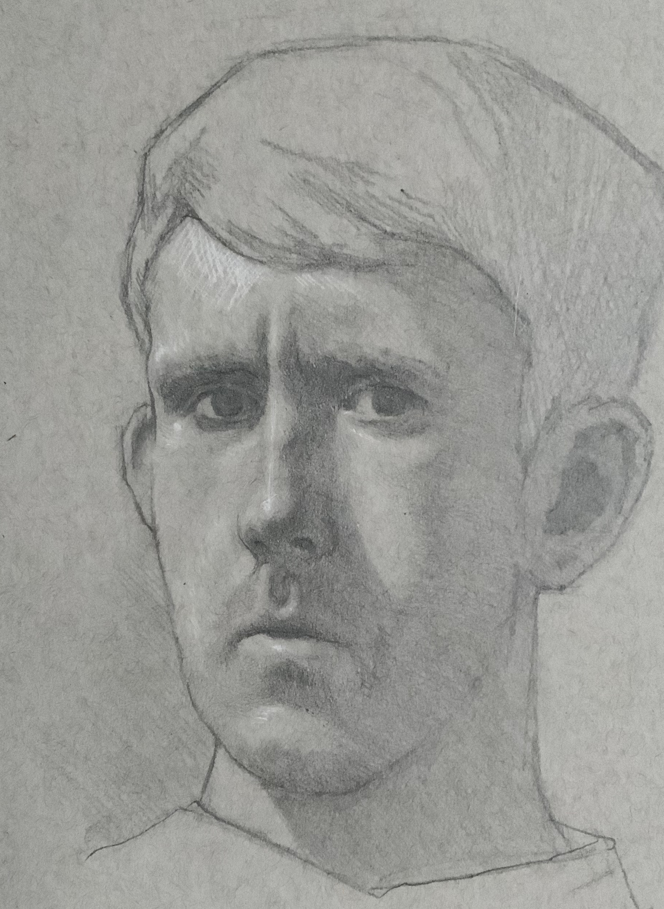

Robin Bartlett

School of Mathematics and Statistics
University of Glasgow
University Place
Glasgow G12 8QQ
United Kingdom
~@gmail.com (replace ~ by robin.bartlett.math)
I am currently a Rankin–Sneddon Fellow at the University of Glasgow. Here is my
CV (updated November 2023).
Research
My research is in number theory. I am particularly interested in integral p-adic Hodge theory,
and how techniques in this area make contact with the Langlands program.
-
Irreducibility of moduli spaces of crystalline representations with irregular Hodge--Tate weights
: pdf
2023.
-
Cycles relations in the affine grassmannian and applications to Breuil--Mezard for G-crystalline representations (updated: 11/10/23)
: pdf
Submitted 2023.
-
Explicit Serre weights via Kummer theory (with Misja Steinmetz)
: pdf
Submitted 2022.
-
Degenerating products of flag varieties and applications to the Breuil--Mezard conjecture (updated 11/10/23)
: pdf
To appear Selecta Mathematica.
-
Potential diagonalisability of pseudo-Barsotti--Tate representations
: pdf
To appear in Journal de Théorie des Nombres de Bordeaux.
-
On the irreducible components of some crystalline deformation rings
: journal,
Forum of Mathematics Sigma, (2020)
-
Potentially diagonalisable crystalline lifts with controlled Hodge--Tate weights
: journal
Documenta Mathematica, (2021)
-
Inertial and Hodge-Tate weights of crystalline representations
: journal,
Mathematische Annalen, (2020)
Teaching
-
Summer Semester 2022: I'm organising the study group which, this semester, will be on modularity lifting theorems.
Here is the program.
-
Winter Semester 2021/22: Masters course on "Deformation theory of Galois representations"
Other things